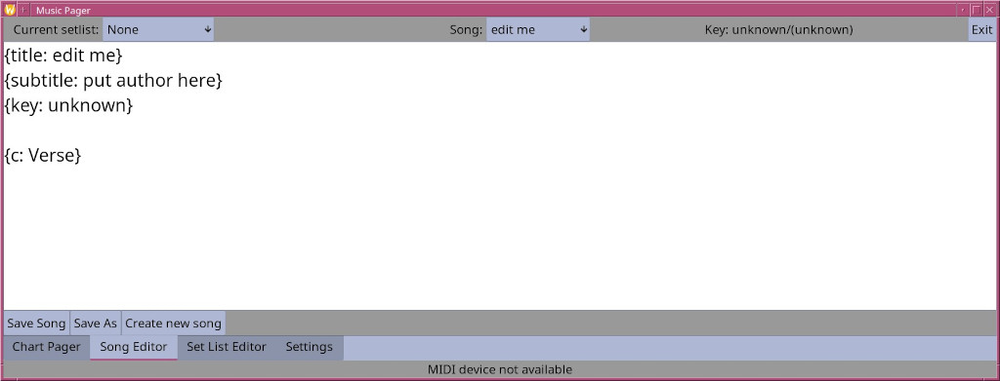

The edit page works on the raw chordpro data in the original file key. Most standard edit short cuts like control X for cut, control C for copy, control V for paste and control S for save work. Holding down the alt key will show underlines for save as and new song as well.
It is up to the user to learn the chordpro format if they wish to edit here though most things are straight forward
The new song button will create a rough template to get the user going as below:
